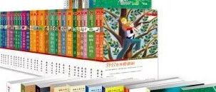

水星阅读 | 突然间翻书如闪电 - 世界获奖儿童小说系列

图片全部来自当当
看完了桥梁书，我一直在找可以能够更进一步的小说。选了蛮久的，为什么久呢，说实话，大家可以看看京东上面的推荐长什么样子，其他渠道也基本如是。7-10岁的推荐是一模一样的。。。。。实在不知道应该怎么吐槽。

我是觉得略有些悲哀，我们国家的花朵就看这个？拿什么去跟别人拼未来？不用说日本美国，也就能将将赶上柬埔寨吧。这个观点继续持续到现在，说起来也两年了啊。。。因为我们现在又双叒叕没书看了。。。
回到当时，我比较偶然的看到了这个系列，当时觉得会不会从桥梁书直接到这一步有些快了。但是看什么世界名著也实在是没什么底气，估计也理解不来。事实证明，这套书里面总有一款可以给你当过渡的书使用。孩子看的非常快，也很投入，很快就完成了从桥梁书到小说的过渡。
因为这套书一直在出，所以我们一直买，后来孩子过生日，还给班里买了一套，分给小朋友们。
这个图片是第一辑，我看了看到现在这套书已经到了93册。。。真不少。也分了年龄档次，当年我们是一套买来40多本的，没有分档。


单本和内页是这样的 -----


这套书的优点在于：
故事性非常丰富，情节取胜，孩子很容易投入。
每一本都看起来很快，也不必担心孩子注意力拉不回来的情况（猫武士就不是这样了）。
因为都是获奖作品，所以立意都是正能量，不用担心孩子瞎想或者被带坏（说到这里，鄙视一下查理九世）。
如果说不好的地方，我现在想来，感觉因为还是故事取胜，所以对孩子的阅读理解提高不多，简言之，就是看看故事罢了，提高不了语文成绩。
如此说来，我们四年级那一年看的书，基本上都是故事书啊。。。。。但是我还是非常推荐这套书，孩子会接触到各种各样的故事，看到各个国家的人物，知道各种不同的风俗，给孩子带来全方面的乐趣。
Enjoy 吧！
截止2018年10月，已经完成的部分。
中文部分
英文部分
水星阅读 | 被妈妈悄悄引导的孩子 - Usborne 第一图书馆
水星阅读 | 有一点点意思的莎士比亚 - Usborne 第三第四图书馆
水星阅读｜费尽心机的妈妈 - Step into Reading 3
长按二维码，关注水星婆婆